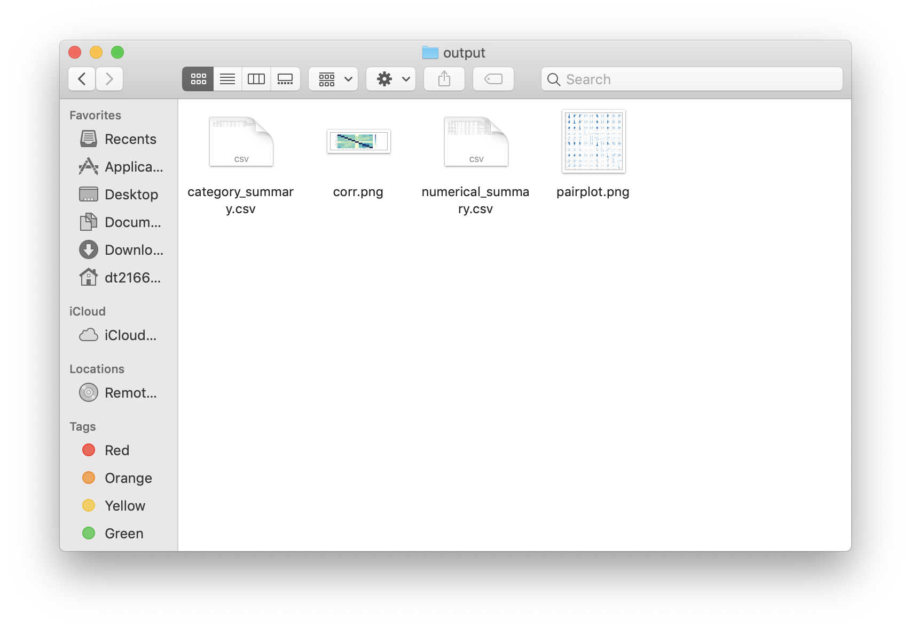
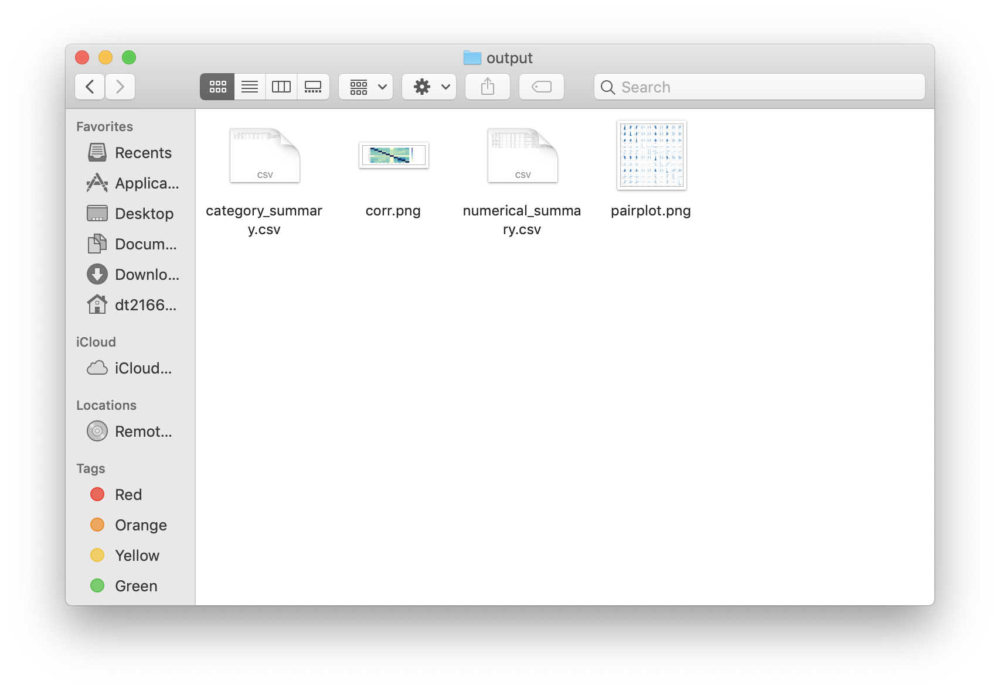

4. Auditing Demos¶
This is a demo to show how to aduit pd.DataFrame using PyAudit:
For example:
#import python libraries
import os
import sys
import pandas as pd
# import PyAudit module
from PyAudit.basics import corr_matrix,numeric_summary, category_summary
# Audit output path
output = os.path.abspath(os.path.join(sys.path[0])) + '/output'
# load DataFrame
df = pd.read_csv('Heart.csv', dtype={'Sex': bool})
print(df.head(5))
# generate the audit results (.csv files in output folder)
print(numeric_summary(df, output))
print(category_summary(df, output))
print(corr_matrix(df, output))
Result:
Age Sex ChestPain RestBP Chol ... Oldpeak Slope Ca Thal AHD
0 63 True typical 145 233 ... 2.3 3 0.0 fixed No
1 67 True asymptomatic 160 286 ... 1.5 2 3.0 normal Yes
2 67 True asymptomatic 120 229 ... 2.6 2 2.0 reversable Yes
3 37 True nonanginal 130 250 ... 3.5 3 0.0 normal No
4 41 False nontypical 130 204 ... 1.4 1 0.0 normal No
[5 rows x 14 columns]
feature data_type min_digits ... zero_rate pos_rate neg_rate
Age Age int64 4 ... 0.000000 1.000000 0.0
RestBP RestBP int64 4 ... 0.000000 1.000000 0.0
Chol Chol int64 5 ... 0.000000 1.000000 0.0
Fbs Fbs int64 3 ... 0.851485 0.148515 0.0
RestECG RestECG int64 3 ... 0.498350 0.501650 0.0
MaxHR MaxHR int64 4 ... 0.000000 1.000000 0.0
ExAng ExAng int64 3 ... 0.673267 0.326733 0.0
Oldpeak Oldpeak float64 3 ... 0.326733 0.673267 0.0
Slope Slope int64 3 ... 0.000000 1.000000 0.0
Ca Ca float64 3 ... 0.588629 0.411371 0.0
[10 rows x 21 columns]
feature data_type ... top_freqs missing_rate
Sex Sex bool ... [206, 97] 0.000000
ChestPain ChestPain object ... [144, 86, 50, 23] 0.000000
Thal Thal object ... [166, 117, 18] 0.006601
AHD AHD object ... [164, 139] 0.000000
[4 rows x 10 columns]
Age RestBP Chol ... Oldpeak Slope Ca
Age 1.000000 0.284946 0.208950 ... 0.203805 0.161770 0.362605
RestBP 0.284946 1.000000 0.130120 ... 0.189171 0.117382 0.098773
Chol 0.208950 0.130120 1.000000 ... 0.046564 -0.004062 0.119000
Fbs 0.118530 0.175340 0.009841 ... 0.005747 0.059894 0.145478
RestECG 0.148868 0.146560 0.171043 ... 0.114133 0.133946 0.128343
MaxHR -0.393806 -0.045351 -0.003432 ... -0.343085 -0.385601 -0.264246
ExAng 0.091661 0.064762 0.061310 ... 0.288223 0.257748 0.145570
Oldpeak 0.203805 0.189171 0.046564 ... 1.000000 0.577537 0.295832
Slope 0.161770 0.117382 -0.004062 ... 0.577537 1.000000 0.110119
Ca 0.362605 0.098773 0.119000 ... 0.295832 0.110119 1.000000
[10 rows x 10 columns]
Process finished with exit code 0
and
 

.,,.
,;;*;;;;,
.-'``;-');;.
/' .-. /*;;
.' \d \;; .;;;,
/ o ` \; ,__. ,;*;;;*;,
\__, _.__,' \_.-') __)--.;;;;;*;;;;,
`""`;;;\ /-')_) __) `\' ';;;;;;
;*;;; -') `)_) |\ | ;;;;*;
;;;;| `---` O | | ;;*;;;
*;*;\| O / ;;;;;*
;;;;;/| .-------\ / ;*;;;;;
;;;*;/ \ | '. (`. ;;;*;;;
;;;;;'. ; | ) \ | ;;;;;;
,;*;;;;\/ |. / /` | ';;;*;
;;;;;;/ |/ / /__/ ';;;
'*wf*/ | / | ;*;
`""""` `""""` ;'